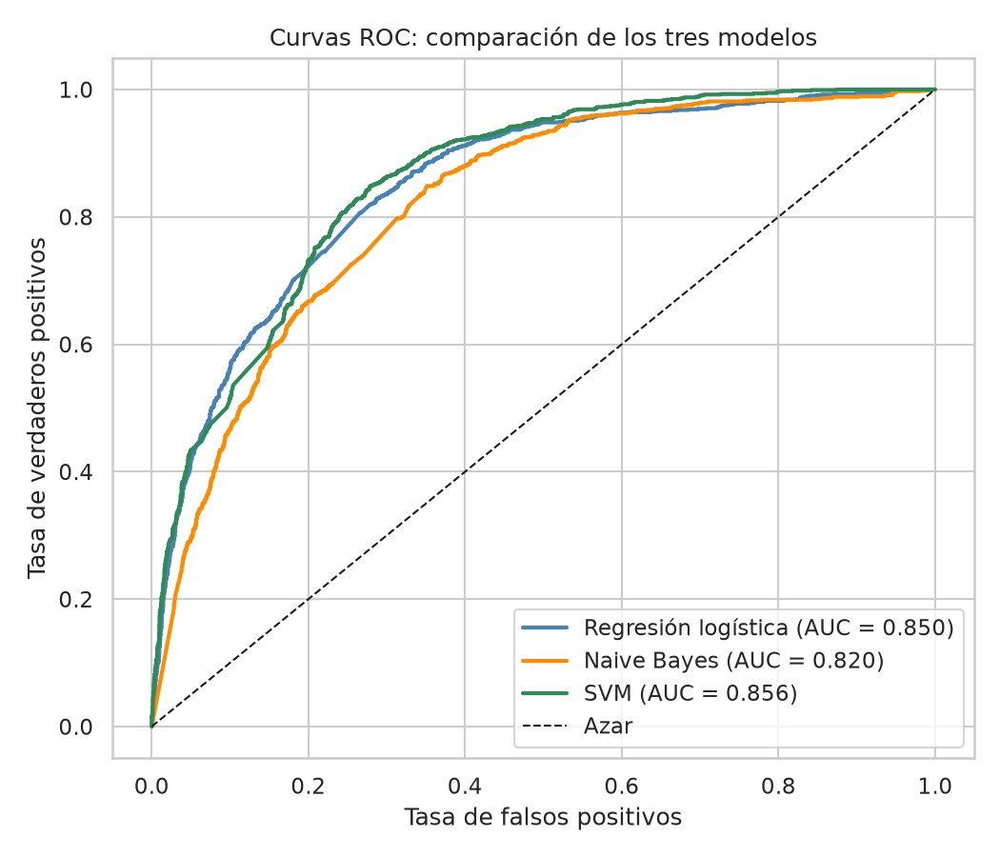
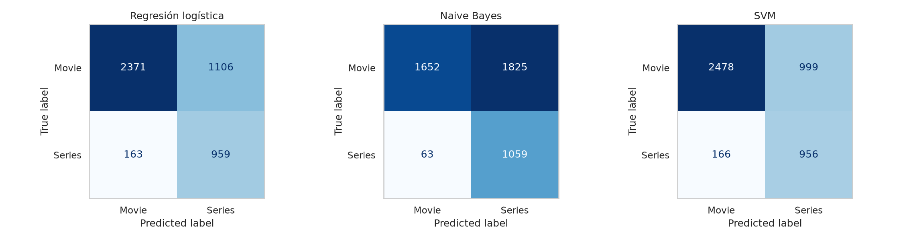
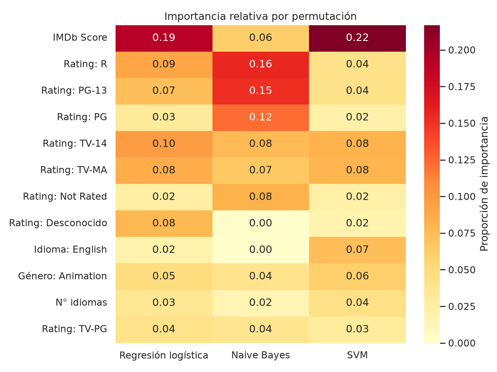

Diplomado de Técnicas Estadísticas y Minería de Datos
Octubre 2026
Dataset: Netflix_clean.csv 15,330 títulos · Objetivo: Series or Movie
Reporte de análisis
1. Planteamiento
El objetivo fue clasificar cada título del catálogo de Netflix como serie o película (Series or Movie; series = clase positiva). La variable es binaria, no tiene faltantes y está desbalanceada (24.4% series), por lo que, además del accuracy, se evaluó con precisión, recall, F1 y AUC. Los datos se dividieron en 70% entrenamiento y 30% prueba, de forma estratificada y con semilla fija.
Se usaron 48 predictoras: IMDb Score, Hidden Gem Score, votos de IMDb (log), año de llegada a Netflix, número de géneros e idiomas, indicador de inglés, los 12 géneros más frecuentes (multi-hot) y la clasificación por edad (one-hot, con los faltantes como categoría «Desconocido»). Los modelos se entrenaron con variables estandarizadas dentro de un pipeline para evitar fuga de información.
Decisión clave: la variable Runtime se excluyó del análisis principal porque delata la clase: ninguna serie tiene duración mayor a 30 minutos en esa variable y el 100% de los títulos de 30 min a más de 2 horas son películas. Con ella, el AUC sube a 0.99 y los modelos prácticamente no se distinguen; se reporta solo como análisis de sensibilidad.
2. Resultados por modelo
Regresión logística (class_weight="balanced"): AUC 0.850, recall 0.855 y precisión 0.464. Sin sobreajuste (accuracy 0.729 en entrenamiento vs. 0.724 en prueba). IMDb Score multiplica por 1.97 los odds de ser serie por cada desviación estándar; las clasificaciones R y PG-13 empujan hacia película (odds ×0.53 y ×0.56) y TV-MA/TV-14 hacia serie (×1.58 y ×1.53).
Naive Bayes (gaussiano): AUC 0.820, el más bajo. Tiene el mayor recall (0.944; solo se le escapan 63 series), pero clasifica como serie a 1,825 películas, por lo que su precisión es 0.367 y su accuracy 0.589. La independencia y normalidad que supone no se cumplen con variables binarias y relacionadas entre sí.
SVM (kernel RBF, C=20, gamma=0.005 por validación cruzada): AUC 0.856, el más alto; precisión 0.489, recall 0.852 y F1 0.621. Es el que comete menos falsos positivos (999). Su importancia por permutación está liderada por IMDb Score.
3. Comparación
Modelo
Accuracy
Precisión
Recall
F1
AUC
Regresión logística
0.724
0.464
0.855
0.602
0.850
Naive Bayes
0.589
0.367
0.944
0.529
0.820
SVM
0.747
0.489
0.852
0.621
0.856
Métricas sobre el conjunto de prueba (n = 4,599). La precisión y el recall corresponden a la clase Series.

Curvas ROC de los tres modelos.

Matrices de confusión en el conjunto de prueba.

Importancia relativa por permutación (cada modelo suma 1).
4. Conclusiones
El SVM es el mejor en accuracy, precisión, F1 y AUC, pero su ventaja sobre la regresión logística es mínima (AUC 0.856 vs. 0.850). La regresión logística es mucho más rápida e interpretable, por lo que ofrece la mejor relación desempeño/simplicidad.
Naive Bayes es el más débil. Solo sería preferible si lo prioritario fuera no perder ninguna serie, a costa de muchas falsas alarmas.
Los tres modelos coinciden en que IMDb Score y la clasificación por edad son las señales más informativas: TV-MA/TV-14 se asocian con series y R/PG-13 con películas.
Limitación: la precisión de la clase Series no supera 0.49, es decir, más de la mitad de los títulos predichos como serie son películas. Se debe en parte al desbalance y al umbral por defecto; ajustarlo permitiría equilibrar precisión y recall según la necesidad.
Recomendación: SVM si se busca el máximo desempeño; regresión logística si se prioriza interpretabilidad con un costo mínimo en desempeño.